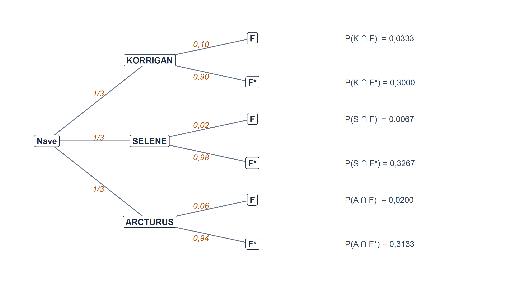

7 Introducción a la probabilidad.

Figura 7.1
Figura 7.1. La probabilidad nació sobre el tapete: dados, cartas y algún cazarrecompensas con demasiado tiempo libre.
Los seis capítulos anteriores han estado dedicados a describir. Con la ayuda de Hyperdrive Express, Shuttlepod Movers, la flota de los tres astilleros galácticos y la muestra completa de \(300\) compañías del universo R-Stars, hemos aprendido a resumir información con medidas de posición y dispersión, a estudiar la relación entre variables mediante tablas de contingencia y coeficientes de correlación, a ajustar modelos de regresión y, en el capítulo anterior, a construir números índice para comparar magnitudes económicas en el tiempo. Ha sido, en cierto modo, un ejercicio de cartografía: dibujar el mapa de lo que hay.
A partir de este capítulo abrimos un bloque distinto. En lugar de describir lo que ha pasado, empezaremos a hablar de lo que podría pasar. En lugar de decir que «los cargueros de la flota tienen un tonelaje medio de 734,65 miles de toneladas», querremos decir cosas como: «si mañana escogemos al azar un carguero de la flota galáctica, ¿qué probabilidad hay de que sea pesado?»; o «entre las compañías R-Stars con la flota categorizada como ANTIGUA, ¿qué probabilidad hay de que su índice de digitalización sea bajo?»; o el clásico dilema del jefe de mantenimiento estelar: «acaba de fallar una nave; ¿de qué astillero es más probable que provenga?».
Pasar de la descripción a la incertidumbre exige un nuevo lenguaje. No basta con hablar de frecuencias observadas: necesitamos formalizar qué queremos decir cuando afirmamos que un suceso es «poco probable», «casi seguro» o «igual de probable que el otro». Ese lenguaje es el Cálculo de Probabilidades, cuyos cimientos ocupan este capítulo y los tres siguientes.
Como todo lenguaje, tiene su historia. La probabilidad no nació en un aula universitaria, sino sobre un tapete de juego: en el siglo XVII, un aficionado a los dados llamado Chevalier de Méré le pidió a Blaise Pascal que le explicara por qué perdía dinero de forma sistemática apostando de cierta manera. Pascal escribió a Fermat, Fermat le contestó y, entre los dos, pusieron los cimientos de lo que hoy manejamos con toda naturalidad en balances, seguros y modelos de riesgo. Casi tres siglos más tarde, un ruso serio llamado Andrei N. Kolmogorov pondría orden axiomático en un jardín que empezaba a parecerse mucho a un tiovivo. Y ya en el siglo XX, gente como Frank P. Ramsey, Bruno de Finetti o Leonard J. Savage daría un giro copernicano al concepto y sentaría las bases de la estadística bayesiana moderna. Los cargueros galácticos aún no existían, pero, si hubieran existido, seguro que Pascal habría escrito otra carta.
7.1 Conceptos básicos. Sucesos aleatorios.
7.1.1 Experimentos deterministas y experimentos aleatorios.
Llamamos experimento a cualquier acción cuyos resultados sean identificables u observables. La estadística distingue dos grandes tipos:
- Experimento determinista es aquel en el que, ante las mismas condiciones de partida, se obtiene siempre el mismo resultado. Si soltamos una llave inglesa desde el hangar de mantenimiento del astillero KORRIGAN de Klendathu, sabemos con la misma certeza con que sabemos nuestro nombre que caerá al suelo (y probablemente sobre el pie de alguien). No hay incertidumbre: hay física.
- Experimento aleatorio es aquel en el que, ante las mismas condiciones de partida, el resultado puede ser diferente y no sabemos de antemano cuál de los resultados posibles ocurrirá. Elegir al azar un carguero de la flota galáctica y anotar de qué astillero procede es aleatorio: el resultado depende de un mecanismo de selección que no podemos anticipar caso por caso. Y lo mismo ocurre con casi cualquier decisión empresarial interesante: fijar el precio de un contrato de flete sin saber cuántas incidencias tendrá la ruta, aceptar un cliente sin saber si pagará a tiempo, contratar seguros sin saber si habrá siniestros.
La estadística —y, dentro de ella, la probabilidad— se ocupa exclusivamente de los segundos.
7.1.2 Espacio muestral y sucesos.
Todo experimento aleatorio tiene asociado un conjunto de resultados posibles. Cada uno de esos resultados se denomina suceso elemental (o suceso básico): es el resultado más simple que puede producirse. Al conjunto de todos ellos lo llamamos espacio muestral y lo denotamos por \(E\).
Los ejemplos clásicos son de manual: al lanzar un dado, el espacio muestral es \(E = \{1, 2, 3, 4, 5, 6\}\); al lanzar dos veces una moneda, \(E = \{(c,c),(c,+),(+,c),(+,+)\}\). Nuestro universo, sin embargo, ofrece ejemplos más interesantes. Consideremos el experimento «elegir al azar un carguero de la flota galáctica formada por los \(48\) vehículos del registro de astilleros» y anotar sus características. El espacio muestral es, entonces, el conjunto de los \(48\) cargueros:
\[ E = \{ \text{iron sovereign}, \text{goliath hauler}, \text{crestfall prime}, \ldots \}. \]
Un suceso (o suceso aleatorio) es, formalmente, un subconjunto del espacio muestral. Ocurre cuando el resultado del experimento es alguno de los sucesos elementales que lo integran. Sobre nuestra flota galáctica podemos definir, por ejemplo:
- \(K =\) «el carguero es del astillero KORRIGAN»,
- \(S =\) «el carguero es del astillero SELENE»,
- \(A =\) «el carguero es del astillero ARCTURUS»,
- \(P =\) «el carguero es pesado» (tonelaje superior a \(700\) mil toneladas),
- \(V =\) «el carguero es veterano» (antigüedad mayor de \(8\) años).
Cada uno de estos sucesos agrupa una parte concreta de la flota. Como los cargueros que componen cada astillero son datos reales del fichero, podemos determinar exactamente qué cargueros integran cada suceso. Por ejemplo, KORRIGAN reúne los cargueros iron sovereign, goliath hauler, crestfall prime, armada bulk carrier, ironclad endeavour, siege runner, bastion freighter, rampart express, titan’s burden, fortress mover, bulwark cargo, redoubt transport, vanguard heavy, parapet carrier, rampart ii, citadel freight, y de manera análoga se describen SELENE y ARCTURUS.
7.1.3 Operaciones con sucesos.
Los sucesos se combinan entre sí mediante tres operaciones básicas, que a estas alturas del curso deberían resultarnos familiares porque son las mismas de la teoría de conjuntos:
- Unión (\(S_1 \cup S_2\)): suceso formado por los elementos que están en \(S_1\), en \(S_2\) o en ambos. Ocurre cuando ocurre al menos uno de los dos («o»).
- Intersección (\(S_1 \cap S_2\)): suceso formado por los elementos que están simultáneamente en \(S_1\) y en \(S_2\). Ocurre cuando ocurren los dos a la vez («y»).
- Complementario (\(S^{*}\), también escrito \(\bar S\) o \(S^{c}\)): suceso formado por los elementos del espacio muestral que no están en \(S\). Ocurre precisamente cuando \(S\) no ocurre.
Estas tres operaciones se pueden combinar y encadenar tanto como se quiera, y el resultado sigue siendo un suceso. Los tres paneles de la Figura 7.2 resumen las tres operaciones básicas mediante diagramas de Venn, que serán a partir de aquí una herramienta visual constante.

Figura 7.2. Las tres operaciones básicas con sucesos. De izquierda a derecha: intersección (área común), unión (todo lo cubierto por A o B) y complementario de A (todo lo que queda fuera de A dentro del espacio muestral).
Un par de casos particulares merecen nombre propio. Si \(S_1 \cap S_2 = \emptyset\), los sucesos son disjuntos (o incompatibles): no pueden ocurrir a la vez. Y si tenemos \(n\) sucesos disjuntos dos a dos (\(S_i \cap S_j = \emptyset\) para todo \(i \neq j\)) cuya unión es el espacio muestral entero (\(\bigcup_{i=1}^n S_i = E\)), decimos que forman una partición de \(E\): cada resultado del experimento cae en uno, y solo uno, de los sucesos. En nuestra flota galáctica, los tres sucesos \(K\), \(S\) y \(A\) (los astilleros) forman una partición: cada carguero está construido por exactamente uno de los tres astilleros. Y también forman una partición el par \(\{P, P^*\}\) (pesado y ligero), como cualquier suceso con su complementario.
Sobre los cargueros del universo R-Stars podemos construir tablas de contingencia como las del capítulo 3 y leerlas ya con ojo probabilístico. La Tabla 7.1 muestra el reparto simultáneo de los \(48\) cargueros según astillero y tonelaje. Cada casilla de la tabla es, exactamente, un suceso: la casilla \((K, P)\) recoge los cargueros que son de KORRIGAN y son pesados a la vez; y así con el resto.
| Astillero | Ligero | Pesado | Total |
|---|---|---|---|
| ARCTURUS | 7 | 9 | 16 |
| KORRIGAN | 0 | 16 | 16 |
| SELENE | 15 | 1 | 16 |
| Total | 22 | 26 | 48 |
Tabla 7.1. Cruce de astillero y tonelaje en la flota galáctica.
Vale la pena detenerse un momento en la tabla. Los \(16\) cargueros de KORRIGAN son todos pesados. Los de SELENE son casi todos ligeros —solo uno supera las \(700\) mil toneladas—. Los de ARCTURUS son una mezcla, con ligera preferencia por el peso. Este simple hecho, que puede parecer una curiosidad descriptiva, tendrá dentro de nada consecuencias probabilísticas relevantes.
7.1.4 Propiedades algebraicas y sucesos complementarios.
Las operaciones con sucesos cumplen las propiedades algebraicas habituales de la teoría de conjuntos:
- Conmutativa: \(S_1 \cup S_2 = S_2 \cup S_1\) y \(S_1 \cap S_2 = S_2 \cap S_1\).
- Asociativa: \(S_1 \cup (S_2 \cup S_3) = (S_1 \cup S_2) \cup S_3\); análogamente para la intersección.
- Distributiva: \(S_1 \cap (S_2 \cup S_3) = (S_1 \cap S_2) \cup (S_1 \cap S_3)\) y \(S_1 \cup (S_2 \cap S_3) = (S_1 \cup S_2) \cap (S_1 \cup S_3)\).
A ellas se añaden las leyes de De Morgan, útiles cuando conviene transformar una unión en intersección o al revés:
\[ (S_1 \cup S_2)^{*} \;=\; S_1^{*} \cap S_2^{*}, \qquad (S_1 \cap S_2)^{*} \;=\; S_1^{*} \cup S_2^{*}. \]
Dicho de otro modo: la negación de un «o» es un «y de negaciones», y la negación de un «y» es un «o de negaciones». Traducido a la vida cotidiana, «no compraré ni Coca-Cola ni Pepsi» equivale a «no compraré Coca-Cola y no compraré Pepsi», que es exactamente la primera ley. Traducido a nuestro universo galáctico: no aceptar un contrato para KORRIGAN o para ARCTURUS equivale a no aceptarlo para KORRIGAN y, además, no aceptarlo para ARCTURUS.
Finalmente, dos sucesos \(S\) y \(S^{*}\) son complementarios si constituyen una partición del espacio muestral: cubren \(E\) entero sin solaparse. En nuestro ejemplo, «ser pesado» y «ser ligero» son sucesos complementarios; también lo son «ser de KORRIGAN» y «no ser de KORRIGAN» (aunque este último es en realidad la unión \(S \cup A\)).
7.2 Concepto de probabilidad.
Ya tenemos los ladrillos: experimentos aleatorios, sucesos y operaciones entre ellos. Nos falta el mortero: una manera consistente de asignar a cada suceso un número que mida cuán verosímil es. A ese número lo llamaremos probabilidad. Intuitivamente:
\[ P: \Omega \longrightarrow [0,1], \qquad P(S) = \text{«medida de la certidumbre de que ocurra } S\text{»}. \]
Que existan varias formas de definir formalmente esa medida no es un accidente histórico ni una pedantería: cada una de ellas resuelve un tipo distinto de problema. Vamos a repasarlas por orden cronológico. Al final del apartado dispondremos de un pequeño mapa comparativo que ayudará a decidir cuál usar en cada situación.
7.2.1 La visión clásica: Laplace.
La primera definición formal la debemos a Pierre-Simon Laplace, quien en su Théorie Analytique des Probabilités (1812) enunció lo que se conoce como regla de Laplace: si el experimento tiene un número finito de casos posibles y todos ellos son igualmente probables, la probabilidad de un suceso \(A\) es la razón entre los casos favorables al suceso y los casos posibles:
\[ P(A) \;=\; \frac{\text{número de casos favorables a } A}{\text{número de casos posibles}}. \]
Bajo el supuesto de equiprobabilidad, calcular una probabilidad se reduce a contar. En la flota galáctica de \(48\) cargueros, si suponemos que la elección al azar hace equiprobables a todos los cargueros, podemos calcular directamente las probabilidades básicas de los sucesos definidos en la sección anterior. La Tabla 7.2 las recoge.
| Suceso | Casos favorables | Casos posibles | Probabilidad |
|---|---|---|---|
| \(K\): es de KORRIGAN | 16 | 48 | 0,3333 |
| \(S\): es de SELENE | 16 | 48 | 0,3333 |
| \(A\): es de ARCTURUS | 16 | 48 | 0,3333 |
| \(P\): es pesado | 26 | 48 | 0,5417 |
| \(P^{*}\): es ligero | 22 | 48 | 0,4583 |
| \(V\): es veterano | 26 | 48 | 0,5417 |
| \(V^{*}\): es reciente | 22 | 48 | 0,4583 |
Tabla 7.2. Probabilidades básicas de los sucesos definidos sobre la flota, calculadas por la regla de Laplace.
La lectura de la tabla es directa. La probabilidad de que un carguero elegido al azar sea de KORRIGAN es \(P(K) = 16/48 = 0,3333\), la de que sea pesado es \(P(P) = 0,5417\), y así sucesivamente. Fíjese cómo la probabilidad de un suceso y la de su complementario suman exactamente \(1\): \(P(P) + P(P^{*}) = 0,5417 + 0,4583 = 1\). No hay magia; es aritmética elemental sobre la que enseguida volveremos.
Ahora una advertencia didáctica, para que nadie se lleve sorpresas más tarde. La probabilidad de la unión de dos sucesos no es, en general, la suma de las probabilidades. Uno podría verse tentado a decir:
\[ P(K \cup P) \;\overset{?}{=}\; P(K) + P(P) \;=\; \tfrac{16}{48} + \tfrac{26}{48} \;=\; \tfrac{42}{48} \;=\; 0,8750. \]
Es incorrecto. Si lo fuera, habríamos contado dos veces los \(16\) cargueros que son a la vez KORRIGAN y pesados. La cuenta correcta es
\[ P(K \cup P) \;=\; P(K) + P(P) - P(K \cap P) \;=\; \tfrac{16}{48} + \tfrac{26}{48} - \tfrac{16}{48} \;=\; \tfrac{26}{48} \;=\; 0,5417. \]
Este ajuste, conocido como regla de inclusión-exclusión, aparecerá enseguida como consecuencia natural de los axiomas de Kolmogorov. Y no es casualidad que el resultado coincida con \(P(P)\): como todo KORRIGAN es también pesado (\(K \subset P\)), la unión \(K \cup P\) es simplemente \(P\).
La belleza de la definición clásica es su claridad. Su límite es que descansa sobre dos hipótesis fuertes: que los casos posibles son finitos y que son equiprobables. Ninguna de las dos se sostiene fuera del mundo idílico de dados, urnas y flotas de \(48\) cargueros. ¿Qué probabilidad hay de que llueva mañana en Coruscant? ¿De que la próxima nave de Hyperdrive Express llegue con retraso? ¿De que un cliente de Kaiju Haulage Co. renueve su contrato? En estas preguntas no hay «casos igualmente probables» a la vista. Necesitamos otra vía.
7.2.2 La visión frecuentista: Von Mises.
La segunda ruta, propuesta por Richard von Mises en 1919, arranca de una observación empírica: cuando repetimos un experimento aleatorio muchas veces, la frecuencia relativa con que ocurre un suceso se estabiliza en torno a un cierto valor. La probabilidad de \(A\) sería, entonces, ese valor límite:
\[ P(A) \;=\; \lim_{N \to \infty} \frac{n_A}{N}, \]
donde \(n_A\) es el número de veces que ha ocurrido \(A\) en \(N\) repeticiones del experimento.
Volvamos al mundo empresarial. La compañía Arrakis Freight, que opera nada menos que \(1.165\) rutas al año entre planetas del sector Arrakis–Kaitain, lleva un registro escrupuloso de qué proporción de vuelos sufre una incidencia menor durante el viaje (un desvío no programado, un retraso mayor de una hora, una avería reparable en ruta). En los últimos \(300\) vuelos de una determinada ruta han acumulado \(42\) incidencias, de modo que la frecuencia relativa observada del suceso «vuelo con incidencia» es
\[ f_{\text{inc}} \;=\; \frac{42}{300} \;=\; 0,1400. \]
Si la ruta se ha operado bajo condiciones estables, esa frecuencia es una estimación razonable de la probabilidad de incidencia en dicha ruta. Podemos representar cómo se comportaría esa estimación si la compañía continuara recopilando datos: al principio, la frecuencia relativa oscila mucho, dependiendo de cuántos vuelos hayan salido bien o mal en las primeras jornadas; a medida que el número de vuelos crece, se calma. La Figura 7.3 lo simula para una probabilidad verdadera del \(14\,\%\).

Figura 7.3. Simulación de la estabilización de la frecuencia relativa de un suceso (incidencia menor en una ruta de Arrakis Freight) conforme aumenta el número de vuelos observados. La probabilidad verdadera del suceso se ha fijado en 0,14 y aparece como línea horizontal discontinua.
Ese comportamiento —la frecuencia relativa se calma en torno a un valor a medida que crece el número de repeticiones— tiene nombre propio en probabilidad: se llama Ley de los Grandes Números, y es uno de los resultados más importantes de todo el edificio probabilístico. La estudiaremos con detalle en el capítulo dedicado a la inferencia; por ahora, basta con saber que el gráfico anterior no es una casualidad ni un sesgo del generador aleatorio: es la manifestación empírica de un teorema que, sin él, buena parte de la estadística no tendría sentido.
Ley de los Grandes Números (versión intuitiva). Si repetimos un experimento aleatorio en las mismas condiciones y de forma independiente, la frecuencia relativa con que ocurre cualquier suceso \(A\) tiende a su probabilidad \(P(A)\) conforme el número de repeticiones crece. Dicho de otra manera: la probabilidad es aquello a lo que se parecen, a la larga, las frecuencias observadas.
La lectura frecuentista tiene un enorme atractivo práctico: convierte la probabilidad en algo medible a partir de datos. Es la base, por ejemplo, de la industria del seguro: una compañía no sabe si un cliente concreto tendrá un siniestro, pero, mirando decenas de miles de pólizas históricas, puede afirmar con notable confianza que el \(2{,}3\,\%\) de los cargueros veteranos sufre un siniestro en un año, y con ese número calcula la prima. Es también la base de los estudios epidemiológicos, del control estadístico de calidad en factorías y de los paneles de audiencia que fijan el precio de la publicidad. Sin frecuencias grandes y estables, muchas industrias se irían a pique.
Y hoy en día tiene una prima cercana, la simulación de Monte Carlo: cuando la probabilidad de un suceso es difícil o imposible de calcular analíticamente, podemos simular por ordenador \(N\) veces el experimento, contar cuántas ocurre el suceso y aproximar \(P(A) \approx n_A / N\). Es el motor detrás de la valoración de derivados financieros complejos, la evaluación de riesgos en centrales nucleares o la calibración de modelos climáticos. En el fondo, es la Ley de los Grandes Números convertida en algoritmo.
Pero, filosóficamente, el enfoque frecuentista tiene un flanco delicado. El «límite cuando \(N \to \infty\)» exige repetir el experimento en las mismas condiciones un número infinito de veces, y ni la logística de Arrakis Freight ni la propia realidad se prestan a semejante despliegue. Además, no aclara qué probabilidad asignar a un suceso que ocurre una sola vez y no se puede repetir (¿probabilidad de que la fusión anunciada entre las dos mayores navieras del sector se cierre este trimestre?). Ese hueco lo cubrirá, más adelante, el enfoque subjetivo.
7.2.3 La visión axiomática: Kolmogorov.
En 1933 aparece el trabajo que da a la teoría su columna vertebral moderna: Andrei N. Kolmogorov publica los axiomas que hoy fundan el Cálculo de Probabilidades. Su enfoque no explica cómo asignar probabilidades a un problema concreto —para eso seguimos apoyándonos en Laplace, en las frecuencias o en modelos teóricos— sino qué propiedades debe cumplir cualquier asignación razonable para poder llamarla probabilidad.
Necesitamos un poco de andamiaje. Dado un espacio muestral \(E\), llamaremos \(\Omega\) a la colección de sucesos con los que queremos trabajar (es decir, todos los subconjuntos de \(E\) que se pueden generar por unión, intersección y complementación). Al par \((E, \Omega)\) se le llama espacio probabilizable. Sobre él, Kolmogorov exige que una probabilidad \(P\) cumpla tres axiomas:
Axiomas de Kolmogorov (1933).
- Para cada suceso \(S \in \Omega\), existe un número no negativo \(P(S) \geq 0\), llamado probabilidad de \(S\).
- La probabilidad del espacio muestral es \(P(E) = 1\).
- Dada una sucesión numerable de sucesos disjuntos dos a dos \(S_1, S_2, \ldots\), se cumple que \[ P\!\left(\bigcup_{i=1}^{\infty} S_i \right) \;=\; \sum_{i=1}^{\infty} P(S_i). \]
Al triple \((E, \Omega, P)\) lo llamamos espacio de probabilidad. Cualquier función \(P\) que cumpla los tres axiomas anteriores es, por definición, una probabilidad. Las asignaciones de Laplace y de Von Mises encajan de manera natural dentro de este esquema: son casos particulares que satisfacen los tres axiomas.
A partir de los axiomas se deducen, casi sin esfuerzo, una serie de propiedades operativas que constituyen la caja de herramientas del día a día del cálculo de probabilidades:
- \(P(\emptyset) = 0\): el suceso imposible tiene probabilidad cero.
- Para \(n\) sucesos disjuntos dos a dos, \(P\!\left(\bigcup_{i=1}^{n} S_i\right) = \sum_{i=1}^{n} P(S_i)\) (versión finita del tercer axioma).
- Regla de la unión (inclusión-exclusión): \(P(S_1 \cup S_2) = P(S_1) + P(S_2) - P(S_1 \cap S_2)\).
- Monotonía: si \(S_1 \subset S\), entonces \(P(S_1) \leq P(S)\).
- Acotación: \(P(S) \leq 1\) para cualquier suceso \(S\).
- Regla del complementario: \(P(S^{*}) = 1 - P(S)\).
Todas ellas son consecuencia mecánica de los axiomas. La sexta, en particular, es la aliada más útil del estudiante: cuando el suceso complementario es más fácil de contar que el suceso original, calcular \(1 - P(S^{*})\) ahorra tiempo, tinta y disgustos.
Verifiquemos la regla de la unión con la flota galáctica. Consideremos los sucesos \(K\) (KORRIGAN) y \(V\) (veterano). En el fichero hay \(15\) cargueros de KORRIGAN veteranos. Aplicando la regla:
\[ P(K \cup V) \;=\; P(K) + P(V) - P(K \cap V) \;=\; \tfrac{16}{48} + \tfrac{26}{48} - \tfrac{15}{48} \;=\; 0,5625. \]
Es decir, algo más de la mitad de los cargueros elegidos al azar de la flota son de KORRIGAN, o veteranos, o ambas cosas. La regla del complementario nos dice, sin más, que el resto —poco menos de la mitad— no cumple ninguna de las dos condiciones.
7.2.4 La visión subjetiva: Ramsey, de Finetti y el bayesianismo moderno.
Los tres enfoques anteriores comparten un supuesto: que existe una probabilidad objetiva, ahí fuera, esperando ser calculada (por conteo, por frecuencia o por axioma). Pero, ¿qué hacer cuando el suceso no es repetible? ¿Qué probabilidad asignamos a que el próximo lanzamiento del carguero Millennium Freight llegue con retraso, cuando es su viaje inaugural y no hay historial? ¿Qué probabilidad a que la nueva regulación aduanera de la Confederación Estelar se apruebe antes de fin de año? ¿Qué probabilidad a que la fusión anunciada entre dos navieras se cierre? Estos son sucesos únicos, sin frecuencias históricas ni casos equiprobables.
La respuesta la dieron, en los años 1920–1950, matemáticos como Frank P. Ramsey, Bruno de Finetti y Leonard J. Savage: la probabilidad es un grado de creencia que un agente racional asigna a un suceso, y se puede medir observando cómo el agente apostaría por él. Si estamos dispuestos a apostar 30 PAVOs contra 70 para ganar 100 en caso de que la fusión se cierre, estamos revelando que nuestra probabilidad subjetiva es \(0{,}30\).
Lo notable —y lo que hace del enfoque subjetivo una teoría matemática y no una simple opinión de barra de bar— es que, si esas apuestas cumplen ciertas condiciones mínimas de coherencia (esencialmente, no aceptar sistemas de apuestas que garanticen perder dinero, lo que se conoce como Dutch book), entonces las probabilidades resultantes satisfacen automáticamente los axiomas de Kolmogorov. Es decir, el enfoque subjetivo produce probabilidades matemáticamente idénticas a las otras tres vías; simplemente, las interpreta de otra forma.
Y sobre esa reinterpretación se ha construido el bayesianismo moderno, el enfoque probabilístico que domina hoy la estadística aplicada, la inteligencia artificial y buena parte del análisis económico y financiero. La idea central es sencillísima y ya la manejaremos formalmente en la Sección 7.3.5:
- Empezamos con una creencia previa sobre un suceso o parámetro, expresada como probabilidad (la prior).
- Observamos evidencia nueva (datos, un test, una señal).
- Actualizamos nuestra creencia usando el Teorema de Bayes para obtener la creencia posterior.
- Repetimos con la siguiente evidencia. Y así indefinidamente.
Así es como piensa hoy un motor de scoring de crédito, un filtro antispam, un sistema de recomendación de Netflix o un modelo epidemiológico. Y así es como piensa —con o sin fórmulas— cualquier gestor razonable: se parte de una creencia, se observan datos, se ajusta. Volveremos a esta idea, ya con la maquinaria del Teorema de Bayes, en la Sección 7.3.5.
7.2.5 Cómo elegir el enfoque. Un mapa comparativo.
Los cuatro enfoques que hemos visto no son alternativas rivales sino herramientas complementarias. Cada uno funciona mejor en un tipo de problema. La Tabla 7.3 los resume.
| Enfoque | Idea | Requiere | Ejemplo típico |
|---|---|---|---|
| Clásico (Laplace, 1812) | Casos favorables entre casos posibles. | Casos finitos y equiprobables. | Loterías, juegos de azar, muestreos. |
| Frecuentista (Von Mises, 1919) | Frecuencia relativa observada en muchas repeticiones. | Poder repetir el experimento muchas veces. | Seguros, control de calidad, epidemiología. |
| Axiomático (Kolmogorov, 1933) | Función que cumple tres axiomas mínimos. | Un espacio \((E,\Omega)\) bien definido. | Toda la matemática de la probabilidad. |
| Subjetivo (Ramsey, de Finetti, 1930s) | Grado de creencia racional revelado por apuestas coherentes. | Un agente racional y evidencia disponible. | Fusiones, riesgos únicos, machine learning bayesiano. |
Tabla 7.3. Los cuatro enfoques del concepto de probabilidad.
Un consejo práctico: no elija un enfoque, elija el mejor enfoque para su problema. Si está calculando el pago esperado de un juego con dados o barajando muestras aleatorias, Laplace. Si tiene registros históricos abundantes y estables, frecuentista. Si necesita demostrar propiedades matemáticas, Kolmogorov. Si el suceso es único y sin frecuencia histórica, subjetivo/bayesiano. Todos son legítimos, y la mayoría de análisis reales combina varios sin darse cuenta.
En el resto del libro, siguiendo la tradición de la estadística inferencial que se enseña en los cursos introductorios, adoptaremos preferentemente los enfoques clásico y frecuentista. Pero conviene tener en mente que existe una vía alternativa muy potente, que es la que rige buena parte del análisis de datos moderno.
7.3 Probabilidad condicionada.
Hasta aquí hemos hablado de probabilidades absolutas: la probabilidad de un suceso a secas, sin condicionantes. Pero en la práctica pocas veces trabajamos con probabilidades absolutas puras: casi siempre disponemos de información parcial que modifica lo que sabemos sobre el experimento.
Consideremos un caso concreto sobre la flota galáctica. La probabilidad de que un carguero, elegido al azar de los \(48\), sea de KORRIGAN es, como ya sabemos, \(P(K) = 0,3333\). Pero suponga ahora que el operario del hangar sabe, sin haberse acercado a mirar la matrícula, que el carguero que le espera es pesado. Con esa información en la mano, ¿sigue creyendo que la probabilidad de que sea de KORRIGAN es \(0,3333\)?
Evidentemente, no. Al restringirnos a los \(26\) cargueros pesados de la flota, sabemos por la tabla de contingencia que \(16\) de ellos son de KORRIGAN. Luego, dentro del universo restringido de «cargueros pesados», la proporción de KORRIGAN es \(16/26 = 0,6154\). La información parcial ha reducido el espacio muestral a los cargueros pesados y ha cambiado la probabilidad.
7.3.1 Definición y cálculo.
Formalmente: dados dos sucesos \(S_1\) y \(S\) con \(P(S) > 0\), la probabilidad condicionada de \(S_1\) dado \(S\) es
\[ P(S_1 \mid S) \;=\; \frac{P(S_1 \cap S)}{P(S)}. \]
Lee así: la probabilidad de \(S_1\) sabiendo que ha ocurrido \(S\) es el peso relativo que \(S_1 \cap S\) tiene dentro de \(S\). Es una operación de actualización: se cambia el marco de referencia de \(E\) a \(S\), y se recalcula la proporción.
Volviendo a nuestro ejemplo:
\[ P(K \mid P) \;=\; \frac{P(K \cap P)}{P(P)} \;=\; \frac{16/48}{26/48} \;=\; \frac{16}{26} \;=\; 0,6154. \]
Y análogamente \(P(S \mid P) = 1/26 = 0,0385\) y \(P(A \mid P) = 9/26 = 0,3462\). Fíjese en cómo cambia el mapa: entre los cargueros pesados, KORRIGAN domina con claridad, ARCTURUS aporta algo menos de un tercio y SELENE prácticamente desaparece. No es que SELENE haya dejado de existir; simplemente ha bajado su influencia en el subconjunto en el que ahora nos movemos.
De la definición se despeja, además, una identidad que usaremos constantemente:
\[ P(S_1 \cap S) \;=\; P(S) \cdot P(S_1 \mid S). \]
En definitiva: la probabilidad de que ocurran los dos sucesos a la vez es la probabilidad de que ocurra uno multiplicada por la probabilidad del otro dado el primero. Esta identidad es el motor de la regla de la multiplicación.
7.3.2 Regla de la multiplicación.
Generalizando el resultado anterior a \(n\) sucesos \(S_1, S_2, \ldots, S_n\):
\[ P\!\left(\bigcap_{i=1}^{n} S_i\right) \;=\; P(S_1)\, P(S_2 \mid S_1)\, P(S_3 \mid S_1 \cap S_2) \cdots P(S_n \mid S_1 \cap \ldots \cap S_{n-1}). \]
Se aplica típicamente al análisis de extracciones sucesivas en las que la probabilidad de cada resultado depende de los anteriores. Un ejemplo característico son las tomas de muestra sin reemplazamiento: cada vez que sacamos un elemento, el conjunto disponible cambia.
Ejemplo. El jefe de logística de un depósito galáctico va a inspeccionar tres cargueros seleccionados al azar de la flota total de \(48\) (sin reemplazamiento, porque una vez inspeccionado un carguero no se vuelve a rellenar el sombrero). ¿Cuál es la probabilidad de que los tres seleccionados sean de KORRIGAN?
Con la regla de la multiplicación:
\[ P(K_1 \cap K_2 \cap K_3) \;=\; P(K_1)\, P(K_2 \mid K_1)\, P(K_3 \mid K_1 \cap K_2) \;=\; \frac{16}{48} \cdot \frac{15}{47} \cdot \frac{14}{46} \;=\; 0,0324. \]
Es decir, cerca de un \(3,2\,\%\): bajo, pero no despreciable, y desde luego bastante más alto de lo que uno esperaría a ojo si no ha calculado nada.
7.3.3 Diagramas de árbol.
Antes de entrar en los dos grandes teoremas que quedan por ver, conviene presentar una herramienta visual que hará el resto del capítulo mucho más digerible: el diagrama de árbol. Un árbol de probabilidad organiza gráficamente una sucesión de sucesos, poniendo en cada rama la probabilidad condicionada correspondiente. La regla de la multiplicación se convierte entonces en una simple recorrido: para calcular la probabilidad conjunta de un camino, se multiplican las probabilidades que hay a lo largo de él.
Anticipemos el escenario que usaremos también en las dos secciones siguientes. El Consejo Estelar de Ingeniería ha emitido un informe de fiabilidad sobre los tres astilleros galácticos. Cada astillero coloca en el mercado el mismo número de naves, de forma que la probabilidad a priori de que una nave nueva provenga de un astillero cualquiera es \(P(K) = P(S) = P(A) = 1/3\). La probabilidad de que una nave sufra un fallo grave durante su primer año de servicio varía según el astillero de origen: \(0{,}10\) para KORRIGAN, \(0{,}02\) para SELENE y \(0{,}06\) para ARCTURUS. La Figura 7.4 representa este experimento como un árbol.

Figura 7.4. Diagrama de árbol para el experimento «elegir al azar una nave del mercado y observar si sufre un fallo grave durante el primer año». En cada rama se anota la probabilidad condicionada correspondiente. Los productos de las ramas de cada camino dan las seis probabilidades conjuntas del cuadro derecho.
Fíjese cómo cada uno de los seis caminos posibles termina en una probabilidad conjunta \(P(\text{astillero} \cap \text{efecto})\), obtenida multiplicando las probabilidades del camino. Los seis números suman \(1\) (compruebe usted mismo), como debe ocurrir con cualquier partición del espacio muestral. Y observará también que, aunque las tres «cuotas» de mercado son iguales (\(1/3\)), las probabilidades conjuntas no lo son en absoluto: \(P(K \cap F) = 0,0333\) es cinco veces mayor que \(P(S \cap F) = 0,0067\). Toda esta información está encerrada en el árbol de forma visual, y va a ser la puerta natural a los dos grandes teoremas que vienen a continuación.
7.3.4 Teorema de la probabilidad total.
Muchos problemas tienen la siguiente estructura: nos interesa la probabilidad de un suceso \(A\), y el espacio muestral se puede repartir en varios subgrupos \(S_1, S_2, \ldots, S_n\) que forman una partición de \(E\). Conocemos la probabilidad de \(A\) dentro de cada subgrupo, es decir, las probabilidades condicionadas \(P(A \mid S_i)\), así como la probabilidad de caer en cada subgrupo, \(P(S_i)\). El Teorema de la Probabilidad Total nos permite ensamblar esa información para obtener \(P(A)\):
\[ P(A) \;=\; \sum_{i=1}^{n} P(A \mid S_i)\, P(S_i). \]
Se lee como una media ponderada: la probabilidad global de \(A\) es la media de sus probabilidades dentro de cada grupo, ponderada por el peso relativo de los grupos. La intuición no puede ser más limpia.
En términos del árbol: sume las probabilidades conjuntas de todos los caminos que llegan a \(A\). En nuestro ejemplo, la probabilidad de que una nave cualquiera sufra un fallo grave es la suma de los tres caminos que terminan en \(F\):
\[ P(F) \;=\; P(F \mid K)\, P(K) + P(F \mid S)\, P(S) + P(F \mid A)\, P(A) \;=\; 0{,}10 \cdot \tfrac{1}{3} + 0{,}02 \cdot \tfrac{1}{3} + 0{,}06 \cdot \tfrac{1}{3} \;=\; 0,0600. \]
Un \(6\,\%\): la tasa global de fallo de la flota, ponderando por la cuota de producción de cada astillero. Ni la peor de los tres (KORRIGAN) ni la mejor (SELENE) contaría por sí sola: la media pesa cada una en su justa proporción. Este número —la probabilidad marginal del efecto— será clave para el siguiente paso.
7.3.5 Teorema de Bayes.
El Teorema de la Probabilidad Total contesta una pregunta directa: dada la causa, ¿qué probabilidad tiene el efecto? El Teorema de Bayes, presentado por el reverendo Thomas Bayes en un ensayo publicado póstumamente en 1763, contesta la pregunta inversa: dado el efecto, ¿qué probabilidad tiene cada causa? Y esa inversión es, seguramente, la operación más poderosa —y más peligrosa— del cálculo de probabilidades.
La fórmula. Dadas las mismas condiciones que en el teorema anterior (\(\{S_1, \ldots, S_n\}\) una partición de \(E\), con \(P(S_i) > 0\), y \(P(A) > 0\)), la probabilidad a posteriori de la causa \(S_i\) dado el efecto \(A\) es:
\[ P(S_i \mid A) \;=\; \frac{P(A \mid S_i)\, P(S_i)}{\sum_{j=1}^{n} P(A \mid S_j)\, P(S_j)} \;=\; \frac{P(A \mid S_i)\, P(S_i)}{P(A)}. \]
Fíjese cómo el denominador es exactamente el resultado del Teorema de la Probabilidad Total. Podemos, pues, calcular Bayes en dos pasos: primero, la probabilidad total \(P(A)\); después, actualizamos.
Retomemos el ejemplo. Un operario del hangar acaba de recibir el parte de averías: una nave ha sufrido un fallo grave. Antes de enviar la factura, quiere saber a qué astillero es más probable apuntar. Aplicando Bayes:
\[ P(K \mid F) = \frac{P(F \mid K)\, P(K)}{P(F)} = \frac{0{,}10 \cdot 1/3}{0{,}06} = 0,5556 \;=\; \tfrac{5}{9}, \]
\[ P(S \mid F) = \frac{0{,}02 \cdot 1/3}{0{,}06} = 0,1111 \;=\; \tfrac{1}{9}, \qquad P(A \mid F) = \frac{0{,}06 \cdot 1/3}{0{,}06} = 0,3333 \;=\; \tfrac{3}{9}. \]
La lectura empresarial es limpia y algo despiadada: más de la mitad de las probabilidades de que la avería sea de KORRIGAN, un tercio de que sea de ARCTURUS, y solo una entre nueve de que sea del hasta ahora impoluto SELENE. Se puede comprobar que las tres probabilidades suman \(1\), lo cual es reconfortante: era imprescindible que el astillero culpable fuera alguno de los tres.
Antes de cerrar la sección, un aviso pedagógico que conviene grabar en el ordenador de vuelo: \(P(K \mid F)\) no es lo mismo que \(P(F \mid K)\), ni suele parecerse. El primer número es \(5/9 \approx 0,5556\); el segundo, \(0{,}10\). Confundir el condicionamiento en un sentido con el condicionamiento en el otro es, probablemente, el error más habitual —y más caro— del razonamiento probabilístico. En la literatura anglosajona se le llama confusion of the inverse, y ha protagonizado desde diagnósticos médicos erróneos hasta sentencias judiciales injustas. En el mundo galáctico, alguna que otra reclamación mal dirigida a un astillero inocente.
7.3.6 Bayes en acción: el detector de morosidad.
El ejemplo anterior es limpio porque las probabilidades a priori son iguales entre sí. En la práctica económica, sin embargo, casi siempre lo interesante ocurre cuando el prior no es uniforme, y en concreto cuando la causa que buscamos es rara. Es el terreno donde Bayes hace magia —y donde la intuición del gestor menos entrenado suele fallar de forma escandalosa. Veámoslo con un ejemplo económico central.
El Consorcio Financiero de Coruscant concede microcréditos a compañías de logística galáctica. Su departamento de riesgo ha desarrollado un algoritmo de scoring que, tras analizar los balances de una compañía, la marca como «sospechosa de futuro impago» o como «solvente». El algoritmo tiene, según sus propios ingenieros, unas prestaciones muy dignas:
- Si la compañía va realmente a impagar (suceso \(M\), «morosa»), el algoritmo lo detecta con probabilidad \(P(D \mid M) = 0{,}90\) (sensibilidad del \(90\,\%\)).
- Si la compañía es solvente (\(M^{*}\)), el algoritmo la deja pasar con probabilidad \(P(D^{*} \mid M^{*}) = 0{,}90\) (especificidad del \(90\,\%\); es decir, un \(10\,\%\) de falsos positivos).
En el histórico del Consorcio, la tasa de morosidad del sector es de \(P(M) = 0{,}05\): solo cinco de cada cien compañías acaban impagando. Un buen día, el algoritmo marca a una compañía cliente, Palpatine Interstellar Ltd., como sospechosa. ¿Con qué probabilidad Palpatine va realmente a impagar?
La respuesta que dictaría la intuición no entrenada sería «\(90\,\%\), como la sensibilidad del test». La respuesta correcta —la que da Bayes— es bastante menos alarmante. Aplicamos primero la probabilidad total:
\[ P(D) \;=\; P(D \mid M)\, P(M) + P(D \mid M^{*})\, P(M^{*}) \;=\; 0{,}90 \cdot 0{,}05 + 0{,}10 \cdot 0{,}95 \;=\; 0,1400. \]
Y ahora Bayes:
\[ P(M \mid D) \;=\; \frac{P(D \mid M)\, P(M)}{P(D)} \;=\; \frac{0{,}90 \cdot 0{,}05}{0,1400} \;=\; 0,3214. \]
Sorpresa mayúscula: aunque el algoritmo tenga un \(90\,\%\) de sensibilidad y un \(90\,\%\) de especificidad, ¡solo un \(32,1\,\%\) de las compañías marcadas acaba realmente impagando! Casi tres de cada cuatro alertas son falsos positivos. Si el Consorcio denegara automáticamente el crédito a toda compañía marcada, estaría penalizando injustamente a la mayoría de sus clientes sospechosos.
¿De dónde sale este resultado tan contraintuitivo? De un fenómeno conocido como paradoja de la tasa base (base rate fallacy). Cuando el suceso que se busca es raro (una tasa base de \(5\,\%\)), incluso un test muy bueno genera muchísimos más falsos positivos que verdaderos positivos, simplemente porque hay muchas más compañías no morosas que morosas. Un algoritmo con estas cifras es útil, sin duda, pero para nada infalible: divide la población de solicitantes en un grupo pequeño con alta concentración de riesgo (donde \(P(M \mid D) = 0,3214\), casi nueve veces la tasa base) y otro con muy baja concentración de riesgo (donde \(P(M \mid D^{*}) = 0,0058\), casi cero). Pero convertir cada alerta en una condena es un error caro.
Este razonamiento es exactamente el que rige el diseño de los sistemas de detección de fraude bancario, los filtros antispam, los tests de cribado médico y las alertas de riesgo geopolítico. Comprender bien la paradoja de la tasa base es, seguramente, la lección más rentable de todo el curso.
7.3.7 Bayes en odds: una forma cómoda de actualizar.
Existe una manera alternativa —y muy práctica— de escribir el Teorema de Bayes, muy usada en el mundo del scoring, las apuestas deportivas y la epidemiología. Se basa en las odds (o «cociente de apuestas») de un suceso, definidas como:
\[ \text{odds}(A) \;=\; \frac{P(A)}{P(A^{*})}. \]
Las odds miden «cuántas veces es más probable que ocurra \(A\) frente a que no ocurra». Por ejemplo, si \(P(M) = 0{,}05\), entonces \(\text{odds}(M) = 0{,}05/0{,}95 \approx 0,0526\), es decir, aproximadamente \(1\) a \(19\): por cada compañía morosa hay unas \(19\) solventes.
Con esta notación, Bayes toma una forma casi mnemotécnica:
\[ \underbrace{\frac{P(M \mid D)}{P(M^{*} \mid D)}}_{\text{odds a posteriori}} \;=\; \underbrace{\frac{P(M)}{P(M^{*})}}_{\text{odds a priori}} \cdot \underbrace{\frac{P(D \mid M)}{P(D \mid M^{*})}}_{\text{cociente de verosimilitudes (LR)}}. \]
En palabras: para actualizar las odds tras observar la evidencia, basta multiplicarlas por el cociente de verosimilitudes \(LR\). En nuestro caso, \(LR = 0{,}90 / 0{,}10 = 9\): el algoritmo hace la hipótesis de morosidad nueve veces más verosímil que la de solvencia. Entonces:
\[ \text{odds}(M \mid D) \;=\; \tfrac{0{,}05}{0{,}95} \cdot 9 \;=\; 0,4737. \]
Y para volver a probabilidad: \(P(M \mid D) = 0{,}4737 / (1 + 0{,}4737) = 0,3214\), que coincide (salvo redondeo) con lo que obtuvimos antes. La forma odds resulta enormemente cómoda cuando llegan varias evidencias sucesivas y hay que actualizar una y otra vez: cada evidencia \(D_k\) simplemente multiplica las odds por su propio \(LR_k\). Es, literalmente, la manera en que un motor de scoring de crédito o un filtro antispam procesan la información.
7.4 Independencia de sucesos.
Hasta aquí, hemos visto que la información sobre un suceso \(S\) modifica, en general, nuestra estimación de la probabilidad de otro suceso \(S_1\): la probabilidad condicionada \(P(S_1 \mid S)\) es distinta de la probabilidad absoluta \(P(S_1)\). Diremos entonces que \(S_1\) está condicionado por \(S\). Formalmente:
\[ \text{$S_1$ está condicionado por $S$} \iff P(S_1) \neq P(S_1 \mid S), \quad \text{con } P(S) > 0. \]
Existe, sin embargo, un caso particular relevante: aquel en el que la información sobre \(S\) no aporta nada sobre \(S_1\). Diremos entonces que los sucesos son independientes:
\[ \text{$S_1$ y $S$ independientes} \iff P(S_1) = P(S_1 \mid S), \quad \text{con } P(S) > 0. \]
De la definición de probabilidad condicionada se deduce la caracterización clásica de la independencia, mucho más cómoda de manejar en la práctica:
\[ P(S_1 \cap S) \;=\; P(S_1) \cdot P(S). \]
En palabras: dos sucesos son independientes si la probabilidad de que ocurran los dos a la vez coincide con el producto de sus probabilidades individuales. Un guiño de la fortuna: la definición operativa es simétrica, mientras que la definición conceptual (basada en el condicionamiento) parecía asimétrica.
7.4.1 Un ejemplo con y sin reemplazamiento.
Ilustremos la diferencia con un ejemplo cercano. En el hangar de mantenimiento hay un lote de \(10\) cargueros que aún están por inspeccionar. Del historial se sabe que \(6\) están aptos para el servicio y \(4\) necesitarán una parada en mantenimiento. Un inspector extrae dos cargueros al azar, uno tras otro. ¿Cuál es la probabilidad de que los dos estén aptos?
Caso 1: sin reemplazamiento. Una vez inspeccionado un carguero, se aparta y no vuelve al lote. Los sucesos son \(A_1\) = «primer carguero apto» y \(A_2\) = «segundo carguero apto». La probabilidad de \(A_1\) es \(6/10\); pero, condicionada a que el primer carguero fuera apto, la probabilidad de \(A_2\) ya no es \(6/10\), sino \(5/9\) (quedan \(5\) aptos entre los \(9\) restantes). Por la regla de la multiplicación:
\[ P(A_1 \cap A_2) \;=\; P(A_1) \cdot P(A_2 \mid A_1) \;=\; \tfrac{6}{10} \cdot \tfrac{5}{9} \;=\; 0,3333. \]
Caso 2: con reemplazamiento. Cada carguero inspeccionado se devuelve al lote antes de la siguiente extracción. Entonces \(A_2\) ya no depende de \(A_1\), y \(P(A_2 \mid A_1) = P(A_2) = 6/10\). Los sucesos son independientes, y la caracterización de la independencia nos da directamente:
\[ P(A_1 \cap A_2) \;=\; P(A_1) \cdot P(A_2) \;=\; \tfrac{6}{10} \cdot \tfrac{6}{10} \;=\; 0,3600. \]
La diferencia es pequeña (\(0,3333\) frente a \(0,3600\)), pero conceptualmente enorme: en un caso, la información obtenida en la primera extracción altera el espacio de la segunda; en el otro, no. En muestras pequeñas, el matiz importa; en muestras grandes, ambos escenarios se aproximan. Es la razón por la que en la inferencia estadística clásica, siempre que la muestra es pequeña respecto al total de la población, se asume el muestreo con reemplazamiento como aproximación cómoda del sin reemplazamiento.
7.4.2 Generalización a más sucesos.
La independencia se extiende a \(n\) sucesos: \(S_1, S_2, \ldots, S_n\) son mutuamente independientes si
\[ P\!\left(\bigcap_{i=1}^{n} S_i\right) \;=\; \prod_{i=1}^{n} P(S_i), \]
y además la propiedad se cumple para cualquier subconjunto de ellos (no basta con que se cumpla para el bloque entero: hay que verificarlo también por parejas, por tríos, etc.). Este matiz suele pasarse por alto en primer curso, pero conviene tenerlo presente: la independencia mutua es una hipótesis más fuerte que la independencia dos a dos.
7.4.3 La independencia es una hipótesis.
Terminamos con una nota didáctica sobre el estatus del concepto de independencia, porque uno tiene tendencia natural a suponer independencia sin cuestionarla. Contrastemos dos escenarios de nuestro universo, uno donde la independencia se cumple casi, y otro donde no se cumple para nada.
Escenario 1 (independencia aproximada). Volvamos a la flota galáctica. Los sucesos \(A_r\) = «carguero de ARCTURUS» y \(P\) = «carguero pesado», ¿son independientes? Tenemos \(P(A_r) = 16/48 = 0,3333\) y \(P(P) = 26/48 = 0,5417\). Si los sucesos fueran independientes, la probabilidad de la intersección debería ser el producto:
\[ P(A_r) \cdot P(P) \;=\; 0,3333 \cdot 0,5417 \;=\; 0,1806. \]
Pero la intersección real es \(P(A_r \cap P) = 9/48 = 0,1875\). Los dos números no coinciden exactamente, pero se parecen bastante. De hecho, \(P(A_r \mid P) = 9/26 = 0,3462\) está bastante cerca de \(P(A_r) = 0,3333\): lo que ARCTURUS hace en tonelaje se parece a lo que hace el conjunto de la flota. La independencia sería aquí una aproximación aceptable.
Escenario 2 (dependencia fortísima). Cambiemos ahora al fichero de las \(300\) compañías del universo R-Stars. Consideremos dos sucesos: \(R\) = «la compañía tiene flota RENOVADA» y \(D_{\text{alto}}\) = «la compañía tiene índice de digitalización por encima de la mediana». La Tabla 7.4 recoge el cruce.
| EFLO | IDIG alto | IDIG bajo | Total |
|---|---|---|---|
| RENOVADA | 62 | 0 | 62 |
| MADURA | 56 | 34 | 90 |
| ANTIGUA | 32 | 116 | 148 |
| Total | 150 | 150 | 300 |
Tabla 7.4. Cruce entre estado de la flota (EFLO) e índice de digitalización (IDIG) en las 300 compañías R-Stars. Se ha dicotomizado IDIG por su mediana.
De la tabla se lee que \(P(R) = 62/300 = 0,2067\) y \(P(D_{\text{alto}}) = 150/300 = 0,5000\). Si los sucesos fueran independientes, \(P(R \cap D_{\text{alto}})\) debería valer \(0,1033\). Pero la intersección real es \(P(R \cap D_{\text{alto}}) = 62/300 = 0,2067\) (¡las \(62\) compañías con flota renovada tienen todas digitalización alta!). Y, más aún, \(P(R \mid D_{\text{alto}}) = 62/150 = 0,4133\) frente a \(P(R) = 0,2067\): la información sobre la digitalización duplica la probabilidad de que la flota sea renovada. La independencia aquí ni por asomo.
La lección conjunta de los dos escenarios: la independencia es una hipótesis, no una descripción. Se cumple exactamente en muy pocos casos reales; se cumple aproximadamente en muchos, lo suficiente para que los cálculos sigan dando resultados útiles; y no se cumple en absoluto cuando las variables comparten mecanismo generador (una compañía moderna tiende a modernizarse en todos los frentes a la vez).
Al final del bloque, cuando estudiemos los modelos teóricos y la inferencia estadística, veremos que muchos supuestos fundacionales (independencia de observaciones sucesivas, independencia entre variables aleatorias) tienen esta misma textura: idealizaciones que funcionan porque están razonablemente cerca de la realidad, no porque sean literalmente ciertas. Como en tantas otras cosas de la vida, lo importante es saber cuándo la idealización cruje.
7.5 Recapitulación y puente al próximo capítulo.
Este capítulo ha puesto los cimientos del bloque de probabilidad. A modo de mapa mental, conviene tener a mano lo siguiente:
- Un experimento aleatorio es una acción cuyo resultado no está determinado de antemano, pero cuyo conjunto de resultados posibles (el espacio muestral \(E\)) sí conocemos.
- Un suceso es cualquier subconjunto de \(E\). Los sucesos se combinan mediante unión, intersección y complementario, con las propiedades algebraicas de siempre (incluidas las leyes de De Morgan).
- La probabilidad asigna a cada suceso un número entre \(0\) y \(1\). Puede introducirse por vía clásica (Laplace, casos equiprobables), frecuentista (Von Mises, frecuencias relativas en el límite, respaldadas por la Ley de los Grandes Números), axiomática (Kolmogorov, tres axiomas y una función) o subjetiva (Ramsey, de Finetti, grado de creencia coherente). Los cuatro enfoques son compatibles y se refuerzan mutuamente: la vía axiomática justifica formalmente lo que las otras tres usaban por intuición.
- La probabilidad condicionada, \(P(A \mid B)\), mide cómo cambia nuestra estimación de \(A\) cuando ya sabemos que ha ocurrido \(B\). Es una actualización de creencias, no un cambio del mundo. Los diagramas de árbol son la herramienta visual natural para trabajar con ella.
- Los teoremas de la probabilidad total y de Bayes completan la caja de herramientas. El primero permite calcular \(P(A)\) como media ponderada sobre una partición del espacio muestral; el segundo permite invertir el condicionamiento, y con ello reajustar las probabilidades a priori de las causas a la vista de un efecto observado. La forma en odds del Teorema de Bayes (
odds posterior = odds prior · LR) es la que hoy rige buena parte del scoring económico y financiero. - Cuidado con la paradoja de la tasa base: cuando el suceso buscado es raro, un test bueno genera muchos falsos positivos. Es el error más caro que puede cometer un gestor con datos.
- La independencia de sucesos es el caso límite en el que la información sobre uno no aporta nada sobre el otro. Se caracteriza por la factorización \(P(A \cap B) = P(A) \cdot P(B)\). Es una hipótesis muy fuerte y muy útil, siempre que se sepa cuándo es razonable adoptarla.
En el siguiente capítulo daremos el salto natural. Hasta aquí hemos hablado de sucesos, es decir, de resultados cualitativos («la nave es de KORRIGAN», «la ruta tuvo incidencia»). Pero muchas veces el resultado de un experimento aleatorio tiene forma numérica: cuántas incidencias hay en un año, cuánto tarda una nave en llegar, cuánto factura una compañía el próximo trimestre, cuántas de las diez próximas compañías solicitantes de crédito acabarán impagando. Ese salto —del suceso a la magnitud numérica— se articula en torno al concepto de variable aleatoria, protagonista del próximo capítulo.
Una variable aleatoria es, sencillamente, una regla que asigna un número a cada resultado del experimento. Piénselo así: si el experimento es «elegir una nave al azar de la flota», podemos definir la variable aleatoria \(X\) = «tonelaje de la nave» o \(Y\) = «\(1\) si es pesada, \(0\) si es ligera». Con esa traducción, todo el instrumental del cálculo diferencial e integral queda disponible para calcular medias, varianzas, cuantiles y —lo más útil de todo— valores esperados que sirven para tomar decisiones económicas bajo incertidumbre. Hyperdrive Express, Arrakis Freight, Shuttlepod Movers y los astilleros galácticos seguirán con nosotros; solo que, a partir de ahora, en lugar de decir «ocurrió» o «no ocurrió», empezaremos a decir «ocurrió con este número».
7.6 Problemas propuestos.
Los ejercicios que siguen combinan cálculo controlado —aplicaciones directas de la regla de Laplace, la regla de la unión, las condicionadas, la probabilidad total, Bayes y su forma en odds— con un peso importante de interpretación: por qué \(P(A\mid B) \neq P(B\mid A)\), cuándo tiene sentido cada enfoque de la probabilidad, cómo se lee la paradoja de la tasa base, y cuándo es razonable asumir independencia. Todas las soluciones detalladas se recogen al final del capítulo.
7.6.1 Problema 7.1. Sucesos sobre la flota galáctica.
Sea la flota de los 48 cargueros del sector R-Stars. Sobre el experimento “elegir al azar un carguero de la flota”, definimos:
- \(K =\) «el carguero es de KORRIGAN»,
- \(S =\) «el carguero es de SELENE»,
- \(A =\) «el carguero es de ARCTURUS»,
- \(P =\) «el carguero es pesado» (tonelaje \(> 700\) mil t),
- \(V =\) «el carguero es veterano» (antigüedad \(> 8\) años).
Se pide:
- Describe con palabras el suceso \(K \cup A\). ¿Cuál sería su suceso complementario?
- Describe qué representa el suceso \((K \cup A) \cap P\). Escríbelo en lenguaje natural.
- Aplica una de las leyes de De Morgan para simplificar \((P^{*} \cup V^{*})^{*}\). ¿A qué suceso equivale?
- ¿Los sucesos \(K\), \(S\) y \(A\) forman una partición del espacio muestral? Justifica en términos de las dos condiciones que debe cumplir una partición.
7.6.2 Problema 7.2. Regla de Laplace y partición.
Sobre la flota galáctica sabemos: 48 cargueros en total, de los cuales 16 de KORRIGAN, 22 de SELENE y 10 de ARCTURUS. De todos ellos, 26 son pesados y 22 son ligeros; 30 son veteranos y 18 son recientes. Se pide, aplicando la regla de Laplace:
- Calcula la probabilidad de que un carguero elegido al azar sea de SELENE.
- Calcula la probabilidad de que sea ligero.
- Calcula la probabilidad de que sea de KORRIGAN o de SELENE.
- Verifica numéricamente que \(P(K) + P(S) + P(A) = 1\). ¿Qué propiedad del capítulo estás confirmando y qué implica sobre los tres sucesos?
7.6.3 Problema 7.3. Regla de la unión e inclusión-exclusión.
La tabla de contingencia astillero × tonelaje sobre la flota es:
| Ligero | Pesado | Total | |
|---|---|---|---|
| KORRIGAN | 0 | 16 | 16 |
| SELENE | 21 | 1 | 22 |
| ARCTURUS | 1 | 9 | 10 |
| Total | 22 | 26 | 48 |
Se pide:
- Calcula \(P(K)\), \(P(P)\) y \(P(K \cap P)\).
- Aplica la regla de la unión (inclusión-exclusión) para obtener \(P(K \cup P)\).
- ¿Qué peculiaridad observas al comparar \(P(K \cup P)\) con \(P(P)\)? Interprétala en términos de la relación de conjuntos entre \(K\) y \(P\).
- Calcula ahora \(P(S \cup P)\) mediante la misma regla y compáralo con \(P(K \cup P)\). Justifica por qué son muy distintos aunque \(K\) y \(S\) tengan tamaños similares.
7.6.4 Problema 7.4. Complementario y leyes de De Morgan.
Sobre 200 compañías del sector R-Stars con actividad intergaláctica, se sabe que:
- El 40% tiene contrato con la Federación de Rutas de Andrómeda (suceso \(F\)).
- El 30% tiene contrato con el Consorcio de Klendathu (suceso \(C\)).
- El 15% tiene contrato con ambos organismos (\(F \cap C\)).
Se pide:
- ¿Qué probabilidad hay de que una compañía elegida al azar tenga al menos uno de los dos contratos?
- ¿Qué probabilidad hay de que no tenga ninguno de los dos?
- Escribe la expresión “no tener ninguno” en términos de \(F\) y \(C\) y aplica la ley de De Morgan que corresponda. Verifica que el resultado coincide con el apartado (b).
- ¿Qué probabilidad hay de que tenga exactamente uno de los dos contratos (uno u otro, pero no los dos a la vez)?
7.6.5 Problema 7.5. Elegir el enfoque de probabilidad.
Para cada uno de los siguientes escenarios, indica qué enfoque de la probabilidad —clásico, frecuentista o subjetivo— sería el más adecuado para asignar la probabilidad, y justifica en una o dos líneas:
- En una jornada de puertas abiertas, la ARTI sortea entre los 300 asistentes un simulador de vuelo. ¿Cuál es la probabilidad de que un asistente concreto salga premiado?
- Arrakis Freight estudia la probabilidad de que un vuelo de la ruta Arrakis-Coruscant sufra al menos una incidencia menor. Dispone del registro de las 5 000 últimas operaciones de esa ruta.
- Un analista financiero necesita valorar la probabilidad de que la fusión anunciada entre Kaiju Haulage Co. y Vader & Company se cierre antes de que termine el trimestre. Es una operación única sin precedentes recientes.
- Un consultor calcula la probabilidad de acertar exactamente 4 respuestas al azar en un test tipo test con 10 preguntas y 4 opciones por pregunta.
- Un actuario de seguros calcula la prima anual del seguro de un carguero de 15 años apoyándose en la base histórica de siniestralidad de los últimos 20 años.
7.6.6 Problema 7.6. Probabilidad condicionada en dos direcciones.
De un fichero de 500 compañías R-Stars, se sabe:
- 150 tienen la flota renovada (\(R\)).
- 120 tienen sede en Andrómeda (\(A\)).
- 60 cumplen ambas condiciones.
Se pide:
- Calcula \(P(R \mid A)\): “de las compañías con sede en Andrómeda, ¿qué proporción tiene flota renovada?”.
- Calcula \(P(A \mid R)\): “de las compañías con flota renovada, ¿qué proporción tiene sede en Andrómeda?”.
- El numerador de ambas fracciones es el mismo (60). ¿Por qué las dos probabilidades condicionadas son distintas?
- Un directivo lee \(P(R \mid A) = 0{,}50\) y concluye: “tener sede en Andrómeda causa que las compañías renueven la flota”. ¿Es válida esa lectura? ¿Qué error clásico está cometiendo?
7.6.7 Problema 7.7. Regla de multiplicación: extracciones sin reemplazamiento.
En el hangar de mantenimiento de Kaiju Haulage Co. hay un lote de 12 cargueros pendientes de inspección: 8 están aptos para el servicio inmediato y 4 necesitan una parada mayor. El inspector extrae al azar, sin reemplazamiento, tres cargueros consecutivos.
Se pide:
- ¿Qué probabilidad hay de que los tres estén aptos?
- ¿Qué probabilidad hay de que los tres necesiten parada?
- ¿Qué probabilidad hay de que el primero esté apto y los dos siguientes necesiten parada?
- ¿Cómo cambiaría el apartado (a) si las extracciones se hicieran con reemplazamiento? Compara ambas cifras y explica el porqué de la diferencia.
7.6.8 Problema 7.8. Teorema de la probabilidad total: tres proveedores.
Hyperdrive Express compra sus reactores a tres proveedores galácticos:
- Proveedor A: suministra el 50% de los reactores; tasa de fallo en el primer año, 2%.
- Proveedor B: suministra el 30%; tasa de fallo, 5%.
- Proveedor C: suministra el 20%; tasa de fallo, 8%.
Se pide:
- Dibuja (o describe) el diagrama de árbol del experimento “elegir al azar un reactor y observar si falla en el primer año”.
- Aplica el teorema de la probabilidad total para calcular \(P(F)\), la probabilidad global de que un reactor cualquiera falle en su primer año.
- Interpreta el resultado obtenido: ¿es coherente que la probabilidad global esté entre las tasas mínima y máxima individuales? ¿Por qué queda más cerca de las tasas bajas que de la alta?
- Hyperdrive Express renegocia con el proveedor C para reducir su tasa de fallo del 8% al 4%, manteniendo su cuota del 20%. ¿En cuánto disminuye la probabilidad global de fallo?
7.6.9 Problema 7.9. Teorema de Bayes: identificar el proveedor.
Sobre el mismo escenario del problema anterior, Hyperdrive Express ha encontrado un reactor averiado en su primer año de servicio. Como la marca del fabricante quedó ilegible durante el rescate, hay que decidir a qué proveedor reclamar.
Se pide:
- Aplica el teorema de Bayes para calcular \(P(A \mid F)\), \(P(B \mid F)\) y \(P(C \mid F)\).
- ¿A qué proveedor es más probable atribuir el fallo? ¿Coincide con el proveedor de mayor cuota de suministro?
- Verifica que las tres probabilidades a posteriori suman 1. ¿Por qué debe cumplirse necesariamente?
- Un directivo argumenta: “el proveedor C tiene la tasa de fallo más alta, así que seguro que el reactor averiado es suyo”. ¿Es correcta esa conclusión? ¿Qué le falta al razonamiento?
7.6.10 Problema 7.10. Paradoja de la tasa base: sistema anti-fraude.
Galactic Casualty & Loss, aseguradora de flotas del sector R-Stars, ha implantado un sistema automático de detección de fraude en partes de siniestro. Sus especificaciones son:
- Si el parte es realmente fraudulento (\(F\)), el sistema lo detecta (\(D\)) con probabilidad \(P(D \mid F) = 0{,}95\) (sensibilidad del 95%).
- Si el parte es legítimo (\(F^{*}\)), el sistema lo descarta (\(D^{*}\)) con probabilidad \(P(D^{*} \mid F^{*}) = 0{,}95\) (especificidad del 95%; equivalentemente, 5% de falsos positivos).
- La tasa de fraude en el sector es \(P(F) = 0{,}02\) (2%).
Un buen día, el sistema marca un parte concreto como sospechoso.
Se pide:
- Calcula la probabilidad de que ese parte concreto sea realmente fraudulento, \(P(F \mid D)\).
- Compara el resultado con la sensibilidad del sistema (95%). ¿Cómo se explica una diferencia tan grande?
- Si la aseguradora rechazara automáticamente todo parte marcado, ¿qué proporción de sus rechazos serían injustos (falsos positivos)?
- Un ingeniero propone endurecer el sistema hasta sensibilidad y especificidad del 99%. Recalcula \(P(F \mid D)\) con las nuevas cifras e interpreta la mejora.
7.6.11 Problema 7.11. Bayes en odds y actualización secuencial.
Retomamos el ejemplo del capítulo: el Consorcio Financiero de Coruscant aplica un test de morosidad con sensibilidad y especificidad del 90% sobre una tasa base de morosidad del 5%, obteniendo \(P(M \mid D) \approx 0{,}3214\) tras un único resultado positivo.
Supón ahora que, tras marcar a una compañía como sospechosa, el Consorcio le aplica un segundo test independiente con las mismas características (\(P(D_2 \mid M) = 0{,}90\); \(P(D_2^{*} \mid M^{*}) = 0{,}90\)), y el resultado vuelve a ser positivo.
Se pide:
- Calcula las odds a priori \(\text{odds}(M)\) y el cociente de verosimilitudes \(LR\) de cada test.
- Actualiza las odds tras el primer test positivo. Convierte de nuevo a probabilidad y verifica que coincide con el \(0{,}3214\) del capítulo.
- Actualiza otra vez las odds tras el segundo test positivo. Convierte a probabilidad \(P(M \mid D_1 \cap D_2)\).
- Comenta la mejora del segundo test sobre el primero. ¿Merece la pena, desde el punto de vista de gestión, aplicar sistemáticamente un segundo test a las compañías marcadas la primera vez?
7.6.12 Problema 7.12. Independencia: verificación con datos reales.
Sobre las 300 compañías del sector R-Stars, la siguiente tabla cruza el estado de la flota con el índice de digitalización (dicotomizado por la mediana):
| IDIG alto | IDIG bajo | Total | |
|---|---|---|---|
| Flota RENOVADA | 62 | 0 | 62 |
| Flota MADURA | 50 | 40 | 90 |
| Flota ANTIGUA | 38 | 110 | 148 |
| Total | 150 | 150 | 300 |
Se pide:
- Calcula \(P(R)\), \(P(D_{\text{alto}})\) y \(P(R \cap D_{\text{alto}})\), donde $R = $ “flota renovada” y $D_{} = $ “índice de digitalización alto”.
- Comprueba si se cumple \(P(R \cap D_{\text{alto}}) = P(R) \cdot P(D_{\text{alto}})\). ¿Son independientes ambos sucesos?
- Calcula \(P(R \mid D_{\text{alto}})\) y compárala con \(P(R)\). Interpreta la diferencia en términos del enunciado del capítulo (“la información sobre un suceso modifica la probabilidad del otro”).
- ¿Qué interpretación económica cabe dar a esta dependencia estadística en el sector R-Stars? ¿Estás legitimado a hablar de causalidad?
7.6.13 Problema 7.13. Auditoría integradora: cribado en la ARTI.
Mara Qyà dirige una auditoría regulatoria destinada a identificar compañías fantasma (con actividad simulada para eludir el pago de tasas galácticas) dentro del registro R-Stars. Su equipo dispone de un test estadístico con las siguientes especificaciones:
- Prevalencia real de compañías fantasma en el sector: \(P(F) = 0{,}03\) (3%).
- Si una compañía es fantasma, el test la marca con probabilidad \(P(T \mid F) = 0{,}98\).
- Si una compañía es legítima, el test la descarta con probabilidad \(P(T^{*} \mid F^{*}) = 0{,}92\) (equivalentemente, 8% de falsos positivos).
El equipo aplica el test a las 300 compañías del registro.
Se pide:
- Calcula \(P(T)\), la probabilidad global de que una compañía cualquiera sea marcada por el test.
- De las 300 compañías del registro, ¿cuántas se espera que marque el test: (i) por ser realmente fantasmas y (ii) por ser falsos positivos?
- Aplica el teorema de Bayes para calcular \(P(F \mid T)\): la probabilidad de que una compañía marcada sea realmente fantasma.
- La ARTI plantea abrir una investigación exhaustiva contra todas las compañías marcadas. ¿Es razonable la decisión? ¿Qué proporción de investigaciones serían “en vano”?
- El equipo propone repetir el test una segunda vez de forma independiente sobre las compañías ya marcadas. Si el segundo test también da positivo, ¿cuál es la nueva \(P(F \mid T_1 \cap T_2)\)? (Sugerencia: usa odds y likelihood ratio.)
- Redacta la recomendación operativa que Mara elevaría al director de la ARTI: ¿un solo test, dos, o hace falta otro criterio? Justifica.
7.7 Soluciones a los problemas propuestos.
7.7.1 Solución al Problema 7.1.
\(K \cup A\) representa “el carguero es de KORRIGAN o de ARCTURUS”. Su complementario es \((K \cup A)^{*} = S\), es decir, “el carguero es de SELENE”, porque los tres astilleros forman una partición del espacio muestral.
\((K \cup A) \cap P\) significa “el carguero es de KORRIGAN o de ARCTURUS, y además es pesado”. En lenguaje natural: es un carguero pesado no fabricado por SELENE.
-
Aplicando la ley de De Morgan \((A_1 \cup A_2)^{*} = A_1^{*} \cap A_2^{*}\) con \(A_1 = P^{*}\) y \(A_2 = V^{*}\):
\[(P^{*} \cup V^{*})^{*} \;=\; (P^{*})^{*} \cap (V^{*})^{*} \;=\; P \cap V.\]
Es decir, “el carguero es pesado y veterano a la vez”.
Sí. Para formar una partición se requiere: (i) que los sucesos sean disjuntos dos a dos (cada carguero pertenece a un solo astillero, así que \(K \cap S = K \cap A = S \cap A = \emptyset\)); y (ii) que su unión cubra todo \(E\) (\(K \cup S \cup A = E\): todo carguero de la flota está construido por alguno de los tres astilleros, no hay más). Ambas condiciones se cumplen, luego \(\{K, S, A\}\) es una partición.
7.7.2 Solución al Problema 7.2.
\(P(S) = 22/48 \approx \mathbf{0{,}4583}\).
\(P(P^{*}) = 22/48 \approx \mathbf{0{,}4583}\) (los 22 ligeros).
-
Como \(K\) y \(S\) son disjuntos (un carguero no puede ser simultáneamente de dos astilleros), aplicamos la propiedad del tercer axioma en su versión finita:
\[P(K \cup S) \;=\; P(K) + P(S) \;=\; \dfrac{16}{48} + \dfrac{22}{48} \;=\; \dfrac{38}{48} \;\approx\; \mathbf{0{,}7917}.\]
Verificación: \(16/48 + 22/48 + 10/48 = 48/48 = \mathbf{1}\). Se confirma la propiedad de que la suma de las probabilidades de los sucesos de una partición vale 1. Esto implica —lo que ya sabíamos por el apartado (d) del problema anterior— que \(\{K, S, A\}\) es una partición del espacio muestral: los tres sucesos son disjuntos y agotan todas las posibilidades.
7.7.3 Solución al Problema 7.3.
\(P(K) = 16/48 \approx 0{,}3333\); \(P(P) = 26/48 \approx 0{,}5417\); \(P(K \cap P) = 16/48 \approx 0{,}3333\) (los 16 KORRIGAN son todos pesados).
-
Aplicando inclusión-exclusión:
\[P(K \cup P) \;=\; P(K) + P(P) - P(K \cap P) \;=\; \dfrac{16}{48} + \dfrac{26}{48} - \dfrac{16}{48} \;=\; \dfrac{26}{48} \;\approx\; \mathbf{0{,}5417}.\]
\(P(K \cup P) = P(P)\). La igualdad surge porque todos los KORRIGAN son pesados: \(K \subset P\). Cuando un conjunto está incluido en otro, la unión coincide con el mayor, y por eso “ser de KORRIGAN o ser pesado” es exactamente lo mismo que “ser pesado”. Es un caso extremo perfectamente consistente con la regla de la unión.
-
\(P(S \cap P) = 1/48\) (solo 1 carguero de SELENE es pesado, según la tabla). Por tanto:
\[P(S \cup P) \;=\; P(S) + P(P) - P(S \cap P) \;=\; \dfrac{22}{48} + \dfrac{26}{48} - \dfrac{1}{48} \;=\; \dfrac{47}{48} \;\approx\; \mathbf{0{,}9792}.\]
Aunque \(K\) y \(S\) tienen tamaños similares (16 y 22 cargueros), sus uniones con \(P\) son radicalmente distintas. La razón es la intersección: \(K \cap P = K\) (todos los KORRIGAN están dentro de \(P\)) mientras que \(S \cap P\) es un único carguero. Cuando la intersección es grande, la unión no crece mucho respecto de \(P\); cuando la intersección es pequeña, la unión suma casi toda la aportación del segundo suceso.
7.7.4 Solución al Problema 7.4.
-
Aplicando inclusión-exclusión:
\[P(F \cup C) \;=\; P(F) + P(C) - P(F \cap C) \;=\; 0{,}40 + 0{,}30 - 0{,}15 \;=\; \mathbf{0{,}55}.\]
El 55% de las compañías tiene al menos uno de los dos contratos.
-
“No tener ninguno de los dos” es el complementario de “tener al menos uno”, es decir, \((F \cup C)^{*}\):
\[P((F \cup C)^{*}) \;=\; 1 - P(F \cup C) \;=\; 1 - 0{,}55 \;=\; \mathbf{0{,}45}.\]
Aplicando la primera ley de De Morgan: \((F \cup C)^{*} = F^{*} \cap C^{*}\). Es decir, “no tener ninguno” equivale a “no tener contrato con la Federación y no tener contrato con el Consorcio”. La probabilidad es la misma que en el apartado (b) —\(P(F^{*} \cap C^{*}) = 0{,}45\)—, obtenida por dos rutas equivalentes. La ley de De Morgan permite pasar de una formulación a otra sin cambiar el resultado.
-
“Exactamente uno” significa “estar en la unión pero no en la intersección”:
\[P(\text{exactamente uno}) \;=\; P(F \cup C) - P(F \cap C) \;=\; 0{,}55 - 0{,}15 \;=\; \mathbf{0{,}40}.\]
Alternativamente, sumando “solo F” más “solo C”: \([P(F) - P(F \cap C)] + [P(C) - P(F \cap C)] = 0{,}25 + 0{,}15 = 0{,}40\) ✓.
7.7.5 Solución al Problema 7.5.
Clásico (Laplace). Los 300 asistentes son casos igualmente probables (sorteo justo), y hay un solo caso favorable. \(P = 1/300 \approx 0{,}0033\).
Frecuentista (Von Mises). Hay un histórico amplio y estable (5 000 vuelos) para calcular la frecuencia relativa de incidencias. La estimación resultante es una aproximación razonable de la probabilidad verdadera. La Ley de los Grandes Números respalda el procedimiento.
Subjetivo (bayesiano). Es un suceso único, sin frecuencia histórica ni casos equiprobables comparables. La probabilidad se asigna como grado de creencia racional del analista, revisable a la luz de nueva información (declaraciones de los CEOs, aprobación regulatoria, etc.).
Clásico. Se conocen los casos posibles y son equiprobables (elegir al azar entre 4 opciones en 10 preguntas). El cálculo se hace por combinatoria (véase el próximo capítulo, con la distribución binomial). Es el escenario canónico de Laplace.
Frecuentista. La aseguradora dispone de un histórico masivo (20 años de siniestralidad) y estable, del que puede estimar la tasa de siniestros de cargueros de esa antigüedad. Es la lógica actuarial estándar.
7.7.6 Solución al Problema 7.6.
-
Por definición de probabilidad condicionada:
\[P(R \mid A) \;=\; \dfrac{P(R \cap A)}{P(A)} \;=\; \dfrac{60/500}{120/500} \;=\; \dfrac{60}{120} \;=\; \mathbf{0{,}50}.\]
-
Análogamente:
\[P(A \mid R) \;=\; \dfrac{P(A \cap R)}{P(R)} \;=\; \dfrac{60/500}{150/500} \;=\; \dfrac{60}{150} \;=\; \mathbf{0{,}40}.\]
Aunque el numerador es común (60 compañías cumplen ambas condiciones), los denominadores son distintos: al condicionar por \(A\) dividimos entre las 120 compañías con sede en Andrómeda; al condicionar por \(R\), entre las 150 con flota renovada. Como los grupos condicionantes tienen tamaños distintos, las proporciones internas también lo son. Es exactamente la asimetría que el capítulo 4 destacaba entre las dos direcciones de una condicionada.
-
No es válida. El directivo comete dos errores clásicos:
- Confunde correlación (o dependencia estadística) con causalidad. Que “sede en Andrómeda” y “flota renovada” aparezcan juntas no implica que una cause la otra.
- Ha confundido implícitamente \(P(R \mid A)\) con \(P(A \mid R)\) al leer la cifra, lo que el capítulo llama confusion of the inverse.
Podría haber, por ejemplo, una tercera variable (subvenciones específicas del Consejo de Andrómeda, mayor prosperidad económica en esa galaxia) que impulse simultáneamente ambas cosas. La probabilidad condicionada describe una asociación, no una explicación.
7.7.7 Solución al Problema 7.7.
-
Aplicando la regla de multiplicación para extracciones sin reemplazamiento:
\[P(A_1 \cap A_2 \cap A_3) \;=\; \dfrac{8}{12}\cdot \dfrac{7}{11}\cdot \dfrac{6}{10} \;=\; \dfrac{336}{1\,320} \;\approx\; \mathbf{0{,}2545}.\]
Aproximadamente el 25,45%.
-
Análogamente para los tres con parada:
\[P(M_1 \cap M_2 \cap M_3) \;=\; \dfrac{4}{12}\cdot \dfrac{3}{11}\cdot \dfrac{2}{10} \;=\; \dfrac{24}{1\,320} \;\approx\; \mathbf{0{,}0182}.\]
Un 1,82%: mucho más raro, coherente con que los “con parada” son minoría.
-
El primero apto, el segundo y el tercero necesitan parada:
\[P(A_1 \cap M_2 \cap M_3) \;=\; \dfrac{8}{12}\cdot \dfrac{4}{11}\cdot \dfrac{3}{10} \;=\; \dfrac{96}{1\,320} \;\approx\; \mathbf{0{,}0727}.\]
-
Con reemplazamiento, cada extracción es independiente de las anteriores, y la probabilidad de que cada carguero sea apto es siempre 8/12:
\[P(A_1 \cap A_2 \cap A_3)_{\text{c/rep}} \;=\; \left(\dfrac{8}{12}\right)^3 \;=\; \dfrac{512}{1\,728} \;\approx\; \mathbf{0{,}2963}.\]
La diferencia (0,2545 sin reemplazamiento frente a 0,2963 con reemplazamiento) refleja que al sacar aptos sin devolverlos, la proporción de aptos en el lote disminuye y por tanto la probabilidad de que el siguiente también sea apto baja. Con lotes muy grandes, ambas cifras se aproximan: sacar un solo carguero apto de un lote de 10 000 apenas altera el resto.
7.7.8 Solución al Problema 7.8.
-
Diagrama de árbol:
Reactor ── P(A)=0,50 ──── A ── P(F|A)=0,02 ──── F └ P(B)=0,30 ──── B ── P(F|A)=0,05 ──── F └ P(C)=0,20 ──── C ── P(F|C)=0,08 ──── F(Con la rama complementaria \(F^{*}\) desde cada proveedor, no dibujada por brevedad.)
-
Aplicando el teorema de la probabilidad total:
\[P(F) \;=\; P(F \mid A)\, P(A) + P(F \mid B)\, P(B) + P(F \mid C)\, P(C) \;=\; 0{,}02\cdot 0{,}50 + 0{,}05\cdot 0{,}30 + 0{,}08\cdot 0{,}20\] \[\;=\; 0{,}010 + 0{,}015 + 0{,}016 \;=\; \mathbf{0{,}041}.\]
Un 4,1% de tasa global de fallo en el primer año.
Sí es coherente: es una media ponderada de las tres tasas individuales (2%, 5%, 8%), y por tanto está necesariamente entre la mínima (2%) y la máxima (8%). Queda más cerca de las tasas bajas porque el proveedor \(A\), con la tasa más baja, tiene también la mayor cuota (50%) y por tanto pesa más en el promedio.
-
Recalculando con la nueva tasa de C:
\[P(F)_{\text{nueva}} \;=\; 0{,}02\cdot 0{,}50 + 0{,}05\cdot 0{,}30 + 0{,}04\cdot 0{,}20 \;=\; 0{,}010 + 0{,}015 + 0{,}008 \;=\; \mathbf{0{,}033}.\]
La probabilidad global pasa de 0,041 a 0,033, una reducción de 0,008 (aproximadamente 20% menos en términos relativos). La mejora es sensible aunque C sea solo el 20% del suministro: reducir a la mitad la tasa del proveedor más deficiente tiene un impacto medible en la fiabilidad agregada.
7.7.9 Solución al Problema 7.9.
-
Aplicando Bayes con \(P(F) = 0{,}041\) (calculada en el problema anterior):
\[P(A \mid F) \;=\; \dfrac{P(F \mid A)\, P(A)}{P(F)} \;=\; \dfrac{0{,}02\cdot 0{,}50}{0{,}041} \;=\; \dfrac{0{,}010}{0{,}041} \;\approx\; \mathbf{0{,}2439}.\]
\[P(B \mid F) \;=\; \dfrac{0{,}05\cdot 0{,}30}{0{,}041} \;=\; \dfrac{0{,}015}{0{,}041} \;\approx\; \mathbf{0{,}3659}.\]
\[P(C \mid F) \;=\; \dfrac{0{,}08\cdot 0{,}20}{0{,}041} \;=\; \dfrac{0{,}016}{0{,}041} \;\approx\; \mathbf{0{,}3902}.\]
Más probable: el proveedor C (\(\approx 39{,}0\%\)). Sorprendentemente, no coincide con el proveedor mayoritario en suministro (A, con el 50% de cuota). Aunque C solo suministra el 20% de los reactores, su alta tasa de fallo (8%) hace que, cuando ocurre un fallo, la probabilidad a posteriori de que proceda de C sea la mayor.
Suma: \(0{,}2439 + 0{,}3659 + 0{,}3902 = \mathbf{1{,}0000}\) ✓. Debe cumplirse porque los tres proveedores forman una partición: cualquier reactor fabricado —incluido el averiado— proviene de exactamente uno de los tres. Al condicionar por \(F\), la partición del espacio muestral original se traduce en una distribución de probabilidad condicionada que también debe sumar 1.
La conclusión del directivo es correcta en dirección, pero incorrecta en el razonamiento. Es cierto que \(C\) tiene la mayor \(P(C \mid F)\), pero el directivo lo justifica mal: dice “tiene la tasa de fallo más alta, así que seguro es de C”. Le falta multiplicar la tasa de fallo por la cuota de suministro (por la \(P(C)\) a priori). Si \(C\) tuviera un 1% de cuota en vez del 20%, con la misma tasa del 8%, la aportación al numerador (\(0{,}01 \cdot 0{,}08 = 0{,}0008\)) sería mucho menor y la conclusión cambiaría radicalmente. Bayes no es solo “el que tiene tasa más alta”; es “el que combina alta tasa con presencia relevante”.
7.7.10 Solución al Problema 7.10.
-
Probabilidad total del marcador:
\[P(D) \;=\; P(D \mid F)\, P(F) + P(D \mid F^{*})\, P(F^{*}) \;=\; 0{,}95\cdot 0{,}02 + 0{,}05\cdot 0{,}98 \;=\; 0{,}019 + 0{,}049 \;=\; 0{,}068.\]
Por Bayes:
\[P(F \mid D) \;=\; \dfrac{P(D \mid F)\, P(F)}{P(D)} \;=\; \dfrac{0{,}019}{0{,}068} \;\approx\; \mathbf{0{,}2794}.\]
Solo un 27,94%: bastante lejos del 95% que uno podría suponer al leer la sensibilidad.
La diferencia (95% de sensibilidad vs. 27,94% de probabilidad a posteriori) es la manifestación clásica de la paradoja de la tasa base. La sensibilidad describe la calidad del test cuando se aplica a un fraudulento; la \(P(F \mid D)\) describe la probabilidad de que un marcado sea fraudulento en una población donde el fraude es muy raro. Como los legítimos son casi 50 veces más numerosos que los fraudulentos, el 5% de falsos positivos entre 98% de legítimos (\(0{,}049\)) supera con creces el 95% de verdaderos positivos entre solo 2% de fraudulentos (\(0{,}019\)).
-
Falsos positivos entre los marcados:
\[P(F^{*} \mid D) \;=\; 1 - P(F \mid D) \;=\; 1 - 0{,}2794 \;\approx\; \mathbf{0{,}7206}.\]
El 72,06% de los rechazos automáticos serían injustos. Rechazar sin más una alerta es, con estas cifras, una política enormemente injusta.
-
Con sensibilidad y especificidad del 99%:
\[P(D)_{\text{nueva}} \;=\; 0{,}99\cdot 0{,}02 + 0{,}01\cdot 0{,}98 \;=\; 0{,}0198 + 0{,}0098 \;=\; 0{,}0296,\]
\[P(F \mid D)_{\text{nueva}} \;=\; \dfrac{0{,}0198}{0{,}0296} \;\approx\; \mathbf{0{,}6689}.\]
La mejora es notable: de 27,94% a 66,89%. Aun así, un tercio de las alertas siguen siendo falsos positivos. Incluso un test casi perfecto no elimina el problema de la tasa base cuando la prevalencia es baja: la única salida realista es combinar el test con otro criterio independiente (véase el problema 7.13).
7.7.11 Solución al Problema 7.11.
-
Odds a priori y cociente de verosimilitudes:
\[\text{odds}(M) \;=\; \dfrac{P(M)}{P(M^{*})} \;=\; \dfrac{0{,}05}{0{,}95} \;\approx\; 0{,}0526 \qquad (\text{aprox. } 1:19).\]
\[LR \;=\; \dfrac{P(D \mid M)}{P(D \mid M^{*})} \;=\; \dfrac{0{,}90}{0{,}10} \;=\; 9.\]
Cada test positivo multiplica las odds por 9.
-
Tras el primer positivo:
\[\text{odds}(M \mid D_1) \;=\; 0{,}0526 \cdot 9 \;\approx\; 0{,}4737.\]
Convertido a probabilidad:
\[P(M \mid D_1) \;=\; \dfrac{0{,}4737}{1 + 0{,}4737} \;\approx\; \mathbf{0{,}3214}.\]
Coincide, salvo redondeo, con la cifra del capítulo (\(\approx 0{,}32\)) ✓.
-
Tras el segundo positivo, aplicando de nuevo el \(LR\):
\[\text{odds}(M \mid D_1 \cap D_2) \;=\; 0{,}4737 \cdot 9 \;\approx\; 4{,}2632.\]
\[P(M \mid D_1 \cap D_2) \;=\; \dfrac{4{,}2632}{1 + 4{,}2632} \;\approx\; \mathbf{0{,}8100}.\]
La probabilidad pasa de 0,3214 (tras un test) a 0,8100 (tras dos tests independientes). El salto es enorme: la evidencia acumulada de dos tests concordantes eleva las creencias del 32% al 81%. Desde el punto de vista de gestión, aplicar sistemáticamente un segundo test tiene todo el sentido siempre que sea razonablemente barato y razonablemente independiente del primero. Como los tests actúan multiplicativamente sobre las odds, dos tests con \(LR = 9\) equivalen a un solo test con \(LR = 81\). Esta es la lógica que rige el diseño de cribados en dos etapas en medicina, banca, seguridad y control de calidad.
7.7.12 Solución al Problema 7.12.
-
De la tabla:
- \(P(R) = 62/300 \approx \mathbf{0{,}2067}\).
- \(P(D_{\text{alto}}) = 150/300 = \mathbf{0{,}5000}\).
- \(P(R \cap D_{\text{alto}}) = 62/300 \approx \mathbf{0{,}2067}\) (todas las compañías con flota renovada tienen digitalización alta).
-
Producto de las marginales: \(P(R) \cdot P(D_{\text{alto}}) = 0{,}2067 \cdot 0{,}5000 \approx 0{,}1033\).
Como \(P(R \cap D_{\text{alto}}) = 0{,}2067 \neq 0{,}1033\), los dos sucesos no son independientes. La probabilidad conjunta observada duplica la que produciría la independencia.
-
Probabilidad condicionada:
\[P(R \mid D_{\text{alto}}) \;=\; \dfrac{P(R \cap D_{\text{alto}})}{P(D_{\text{alto}})} \;=\; \dfrac{62/300}{150/300} \;=\; \dfrac{62}{150} \;\approx\; \mathbf{0{,}4133}.\]
Frente a \(P(R) = 0{,}2067\), la información sobre la digitalización duplica la probabilidad de que la flota sea renovada. Es exactamente el tipo de dependencia que el capítulo señala: “la información sobre un suceso modifica sensiblemente la probabilidad del otro”, tanto que aquí la dependencia raya en un extremo (todas las flotas renovadas están asociadas a digitalización alta).
Económicamente, la asociación tiene una lectura razonable: las compañías que han modernizado su flota tienden a haber modernizado también su gestión digital. Ambas cosas son manifestaciones de un mismo esfuerzo transformador. Ahora bien, no cabe hablar de causalidad: no se sabe si digitalizar impulsa la renovación de flota, si renovar la flota exige mayor digitalización, o si ambas responden a una tercera variable (calidad de gestión, capacidad financiera, apetito por la innovación). El capítulo 4 dedicó una sección entera a este mismo aviso; la dependencia estadística es descripción, no explicación.
7.7.13 Solución al Problema 7.13.
-
Probabilidad global del marcador:
\[P(T) \;=\; P(T \mid F)\, P(F) + P(T \mid F^{*})\, P(F^{*}) \;=\; 0{,}98\cdot 0{,}03 + 0{,}08\cdot 0{,}97 \;=\; 0{,}0294 + 0{,}0776 \;=\; \mathbf{0{,}1070}.\]
El 10,7% de las compañías serán marcadas por el test.
-
Descomposición de las marcadas sobre las 300 compañías:
- Fantasmas reales: \(300 \cdot 0{,}03 = 9\) compañías. Marcadas correctamente: \(9 \cdot 0{,}98 \approx \mathbf{8{,}82 \approx 9}\) compañías (verdaderos positivos).
- Legítimas: \(300 - 9 = 291\). Marcadas incorrectamente: \(291 \cdot 0{,}08 \approx \mathbf{23{,}28 \approx 23}\) compañías (falsos positivos).
- Total marcadas: \(\approx 9 + 23 = 32\) compañías (verifica \(300 \cdot 0{,}1070 = 32{,}1\) ✓).
-
Aplicando Bayes:
\[P(F \mid T) \;=\; \dfrac{P(T \mid F)\, P(F)}{P(T)} \;=\; \dfrac{0{,}0294}{0{,}1070} \;\approx\; \mathbf{0{,}2748}.\]
Solo un 27,48% de las compañías marcadas son realmente fantasmas. Coincide, salvo redondeo, con el ratio del apartado (b): \(9/32 \approx 0{,}28\).
No es razonable investigar exhaustivamente a las 32 compañías marcadas. El 72,52% de las investigaciones (unas 23 de 32) recaerían sobre compañías legítimas: coste operativo enorme, desgaste institucional y perjuicio potencial a compañías inocentes. Es la paradoja de la tasa base aplicada al ámbito regulatorio.
-
Actualización con odds:
- \(\text{odds}(F) = 0{,}03/0{,}97 \approx 0{,}0309\).
- \(LR = 0{,}98/0{,}08 = 12{,}25\).
- Tras primer positivo: \(\text{odds}(F \mid T_1) = 0{,}0309 \cdot 12{,}25 \approx 0{,}3789 \Rightarrow P \approx 0{,}2748\) ✓.
- Tras segundo positivo: \(\text{odds}(F \mid T_1 \cap T_2) = 0{,}3789 \cdot 12{,}25 \approx 4{,}6415 \Rightarrow P \approx \mathbf{0{,}8228}\).
La probabilidad sube del 27,5% al 82,3% tras dos tests independientes concordantes: mejora radical.
-
Recomendación operativa de Mara Qyà:
“Un solo test es insuficiente como base para investigación exhaustiva: casi tres de cada cuatro compañías marcadas serían inocentes, lo que haría inasumible el coste operativo y el impacto reputacional. Propongo un cribado en dos etapas: aplicar el test a todo el registro (300 compañías); repetir un segundo test independiente sobre las 32 marcadas la primera vez; y abrir investigación exhaustiva únicamente sobre las que salgan positivas en ambos pases (probabilidad a posteriori del 82%). El coste marginal del segundo test es despreciable frente al ahorro en investigaciones fallidas, y la calidad estadística del filtro pasa de cuestionable a razonablemente sólida. Este esquema de cribado en cascada es análogo al que ya utilizan las agencias tributarias y las autoridades de supervisión financiera de la Federación.”
La lección de fondo del capítulo es exactamente esta: cuando el suceso buscado es raro, un solo test nunca es suficiente por bueno que parezca, y la solución honesta pasa por acumular evidencia. La probabilidad no es un veredicto: es un instrumento para tomar decisiones proporcionadas al nivel de incertidumbre.